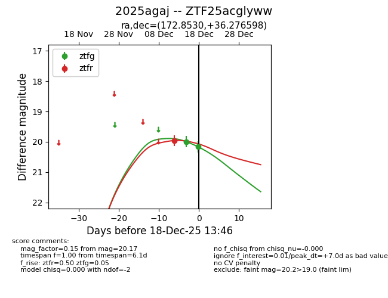
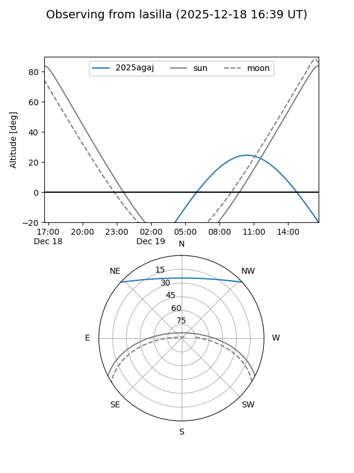
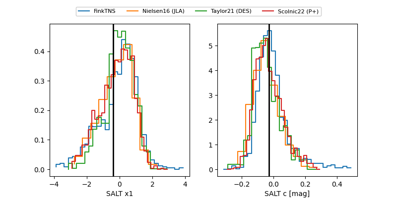

2025agaj
Target 2025agaj at 2025-12-18 13:47
Aliases and brokers:
FINK: fink-portal.org/ZTF25acglyww
Lasair: lasair-ztf.lsst.ac.uk/objects/ZTF25acglyww
ALeRCE: alerce.online/object/ZTF25acglyww
TNS: wis-tns.org/object/2025agaj
YSE: ziggy.ucolick.org/yse/transient_detail/2025agaj
alt names
ZTF25acglyww (ztf,fink_ztf)
2025agaj (tns,yse)
Coordinates:
equatorial (ra, dec) = 172.8530,+36.27660
equatorial (HMS+DMS) = 11:31:24.71,+36:16:35.75
galactic (l, b) = (179.6320,+70.73152)
Photometry
last ztfg=20.17, ztfr=19.96
2 ztfg, 1 ztfr detections
Lightcurve

Visibility


Additional plots
